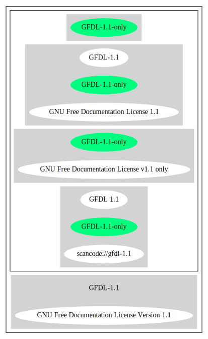

Key |
Value |
|---|---|
Fullname |
GNU Free Documentation License v1.1 only |
Shortname |
GFDL-1.1-only |
Rating |
Unknown, probably Attention or Stop or No-Go |
Classification |
WeakCopyleft |
Other Names:
scancode://gfdl-1.1
GFDL 1.1
↓“Exception: Data licensed under the FDL with no invariant sections are considered DFSG-free as of GR 2006-001: http://www.debian.org/vote/2006/vote_001#outcome” (source: Debian Free Software Guidelines)
“Per SPDX.org, this license was released March 2000” (source: Scancode)
Homepage: http://www.gnu.org/licenses/old-licenses/fdl-1.1.txt
SPDX: http://spdx.org/licenses/GFDL-1.1-only.json
http://www.lysator.liu.se/~kjell-e/tekla/linux/security/fdl.html
GNU Free Documentation License
Version 1.1, March 2000
Copyright (C) 2000 Free Software Foundation, Inc.
51 Franklin St, Fifth Floor, Boston, MA 02110-1301 USA
Everyone is permitted to copy and distribute verbatim copies
of this license document, but changing it is not allowed.
0. PREAMBLE
The purpose of this License is to make a manual, textbook, or other
written document "free" in the sense of freedom: to assure everyone
the effective freedom to copy and redistribute it, with or without
modifying it, either commercially or noncommercially. Secondarily,
this License preserves for the author and publisher a way to get
credit for their work, while not being considered responsible for
modifications made by others.
This License is a kind of "copyleft", which means that derivative
works of the document must themselves be free in the same sense. It
complements the GNU General Public License, which is a copyleft
license designed for free software.
We have designed this License in order to use it for manuals for free
software, because free software needs free documentation: a free
program should come with manuals providing the same freedoms that the
software does. But this License is not limited to software manuals;
it can be used for any textual work, regardless of subject matter or
whether it is published as a printed book. We recommend this License
principally for works whose purpose is instruction or reference.
1. APPLICABILITY AND DEFINITIONS
This License applies to any manual or other work that contains a
notice placed by the copyright holder saying it can be distributed
under the terms of this License. The "Document", below, refers to any
such manual or work. Any member of the public is a licensee, and is
addressed as "you".
A "Modified Version" of the Document means any work containing the
Document or a portion of it, either copied verbatim, or with
modifications and/or translated into another language.
A "Secondary Section" is a named appendix or a front-matter section of
the Document that deals exclusively with the relationship of the
publishers or authors of the Document to the Document's overall subject
(or to related matters) and contains nothing that could fall directly
within that overall subject. (For example, if the Document is in part a
textbook of mathematics, a Secondary Section may not explain any
mathematics.) The relationship could be a matter of historical
connection with the subject or with related matters, or of legal,
commercial, philosophical, ethical or political position regarding
them.
The "Invariant Sections" are certain Secondary Sections whose titles
are designated, as being those of Invariant Sections, in the notice
that says that the Document is released under this License.
The "Cover Texts" are certain short passages of text that are listed,
as Front-Cover Texts or Back-Cover Texts, in the notice that says that
the Document is released under this License.
A "Transparent" copy of the Document means a machine-readable copy,
represented in a format whose specification is available to the
general public, whose contents can be viewed and edited directly and
straightforwardly with generic text editors or (for images composed of
pixels) generic paint programs or (for drawings) some widely available
drawing editor, and that is suitable for input to text formatters or
for automatic translation to a variety of formats suitable for input
to text formatters. A copy made in an otherwise Transparent file
format whose markup has been designed to thwart or discourage
subsequent modification by readers is not Transparent. A copy that is
not "Transparent" is called "Opaque".
Examples of suitable formats for Transparent copies include plain
ASCII without markup, Texinfo input format, LaTeX input format, SGML
or XML using a publicly available DTD, and standard-conforming simple
HTML designed for human modification. Opaque formats include
PostScript, PDF, proprietary formats that can be read and edited only
by proprietary word processors, SGML or XML for which the DTD and/or
processing tools are not generally available, and the
machine-generated HTML produced by some word processors for output
purposes only.
The "Title Page" means, for a printed book, the title page itself,
plus such following pages as are needed to hold, legibly, the material
this License requires to appear in the title page. For works in
formats which do not have any title page as such, "Title Page" means
the text near the most prominent appearance of the work's title,
preceding the beginning of the body of the text.
2. VERBATIM COPYING
You may copy and distribute the Document in any medium, either
commercially or noncommercially, provided that this License, the
copyright notices, and the license notice saying this License applies
to the Document are reproduced in all copies, and that you add no other
conditions whatsoever to those of this License. You may not use
technical measures to obstruct or control the reading or further
copying of the copies you make or distribute. However, you may accept
compensation in exchange for copies. If you distribute a large enough
number of copies you must also follow the conditions in section 3.
You may also lend copies, under the same conditions stated above, and
you may publicly display copies.
3. COPYING IN QUANTITY
If you publish printed copies of the Document numbering more than 100,
and the Document's license notice requires Cover Texts, you must enclose
the copies in covers that carry, clearly and legibly, all these Cover
Texts: Front-Cover Texts on the front cover, and Back-Cover Texts on
the back cover. Both covers must also clearly and legibly identify
you as the publisher of these copies. The front cover must present
the full title with all words of the title equally prominent and
visible. You may add other material on the covers in addition.
Copying with changes limited to the covers, as long as they preserve
the title of the Document and satisfy these conditions, can be treated
as verbatim copying in other respects.
If the required texts for either cover are too voluminous to fit
legibly, you should put the first ones listed (as many as fit
reasonably) on the actual cover, and continue the rest onto adjacent
pages.
If you publish or distribute Opaque copies of the Document numbering
more than 100, you must either include a machine-readable Transparent
copy along with each Opaque copy, or state in or with each Opaque copy
a publicly-accessible computer-network location containing a complete
Transparent copy of the Document, free of added material, which the
general network-using public has access to download anonymously at no
charge using public-standard network protocols. If you use the latter
option, you must take reasonably prudent steps, when you begin
distribution of Opaque copies in quantity, to ensure that this
Transparent copy will remain thus accessible at the stated location
until at least one year after the last time you distribute an Opaque
copy (directly or through your agents or retailers) of that edition to
the public.
It is requested, but not required, that you contact the authors of the
Document well before redistributing any large number of copies, to give
them a chance to provide you with an updated version of the Document.
4. MODIFICATIONS
You may copy and distribute a Modified Version of the Document under
the conditions of sections 2 and 3 above, provided that you release
the Modified Version under precisely this License, with the Modified
Version filling the role of the Document, thus licensing distribution
and modification of the Modified Version to whoever possesses a copy
of it. In addition, you must do these things in the Modified Version:
A. Use in the Title Page (and on the covers, if any) a title distinct
from that of the Document, and from those of previous versions
(which should, if there were any, be listed in the History section
of the Document). You may use the same title as a previous version
if the original publisher of that version gives permission.
B. List on the Title Page, as authors, one or more persons or entities
responsible for authorship of the modifications in the Modified
Version, together with at least five of the principal authors of the
Document (all of its principal authors, if it has less than five).
C. State on the Title page the name of the publisher of the
Modified Version, as the publisher.
D. Preserve all the copyright notices of the Document.
E. Add an appropriate copyright notice for your modifications
adjacent to the other copyright notices.
F. Include, immediately after the copyright notices, a license notice
giving the public permission to use the Modified Version under the
terms of this License, in the form shown in the Addendum below.
G. Preserve in that license notice the full lists of Invariant Sections
and required Cover Texts given in the Document's license notice.
H. Include an unaltered copy of this License.
I. Preserve the section entitled "History", and its title, and add to
it an item stating at least the title, year, new authors, and
publisher of the Modified Version as given on the Title Page. If
there is no section entitled "History" in the Document, create one
stating the title, year, authors, and publisher of the Document as
given on its Title Page, then add an item describing the Modified
Version as stated in the previous sentence.
J. Preserve the network location, if any, given in the Document for
public access to a Transparent copy of the Document, and likewise
the network locations given in the Document for previous versions
it was based on. These may be placed in the "History" section.
You may omit a network location for a work that was published at
least four years before the Document itself, or if the original
publisher of the version it refers to gives permission.
K. In any section entitled "Acknowledgements" or "Dedications",
preserve the section's title, and preserve in the section all the
substance and tone of each of the contributor acknowledgements
and/or dedications given therein.
L. Preserve all the Invariant Sections of the Document,
unaltered in their text and in their titles. Section numbers
or the equivalent are not considered part of the section titles.
M. Delete any section entitled "Endorsements". Such a section
may not be included in the Modified Version.
N. Do not retitle any existing section as "Endorsements"
or to conflict in title with any Invariant Section.
If the Modified Version includes new front-matter sections or
appendices that qualify as Secondary Sections and contain no material
copied from the Document, you may at your option designate some or all
of these sections as invariant. To do this, add their titles to the
list of Invariant Sections in the Modified Version's license notice.
These titles must be distinct from any other section titles.
You may add a section entitled "Endorsements", provided it contains
nothing but endorsements of your Modified Version by various
parties--for example, statements of peer review or that the text has
been approved by an organization as the authoritative definition of a
standard.
You may add a passage of up to five words as a Front-Cover Text, and a
passage of up to 25 words as a Back-Cover Text, to the end of the list
of Cover Texts in the Modified Version. Only one passage of
Front-Cover Text and one of Back-Cover Text may be added by (or
through arrangements made by) any one entity. If the Document already
includes a cover text for the same cover, previously added by you or
by arrangement made by the same entity you are acting on behalf of,
you may not add another; but you may replace the old one, on explicit
permission from the previous publisher that added the old one.
The author(s) and publisher(s) of the Document do not by this License
give permission to use their names for publicity for or to assert or
imply endorsement of any Modified Version.
5. COMBINING DOCUMENTS
You may combine the Document with other documents released under this
License, under the terms defined in section 4 above for modified
versions, provided that you include in the combination all of the
Invariant Sections of all of the original documents, unmodified, and
list them all as Invariant Sections of your combined work in its
license notice.
The combined work need only contain one copy of this License, and
multiple identical Invariant Sections may be replaced with a single
copy. If there are multiple Invariant Sections with the same name but
different contents, make the title of each such section unique by
adding at the end of it, in parentheses, the name of the original
author or publisher of that section if known, or else a unique number.
Make the same adjustment to the section titles in the list of
Invariant Sections in the license notice of the combined work.
In the combination, you must combine any sections entitled "History"
in the various original documents, forming one section entitled
"History"; likewise combine any sections entitled "Acknowledgements",
and any sections entitled "Dedications". You must delete all sections
entitled "Endorsements."
6. COLLECTIONS OF DOCUMENTS
You may make a collection consisting of the Document and other documents
released under this License, and replace the individual copies of this
License in the various documents with a single copy that is included in
the collection, provided that you follow the rules of this License for
verbatim copying of each of the documents in all other respects.
You may extract a single document from such a collection, and distribute
it individually under this License, provided you insert a copy of this
License into the extracted document, and follow this License in all
other respects regarding verbatim copying of that document.
7. AGGREGATION WITH INDEPENDENT WORKS
A compilation of the Document or its derivatives with other separate
and independent documents or works, in or on a volume of a storage or
distribution medium, does not as a whole count as a Modified Version
of the Document, provided no compilation copyright is claimed for the
compilation. Such a compilation is called an "aggregate", and this
License does not apply to the other self-contained works thus compiled
with the Document, on account of their being thus compiled, if they
are not themselves derivative works of the Document.
If the Cover Text requirement of section 3 is applicable to these
copies of the Document, then if the Document is less than one quarter
of the entire aggregate, the Document's Cover Texts may be placed on
covers that surround only the Document within the aggregate.
Otherwise they must appear on covers around the whole aggregate.
8. TRANSLATION
Translation is considered a kind of modification, so you may
distribute translations of the Document under the terms of section 4.
Replacing Invariant Sections with translations requires special
permission from their copyright holders, but you may include
translations of some or all Invariant Sections in addition to the
original versions of these Invariant Sections. You may include a
translation of this License provided that you also include the
original English version of this License. In case of a disagreement
between the translation and the original English version of this
License, the original English version will prevail.
9. TERMINATION
You may not copy, modify, sublicense, or distribute the Document except
as expressly provided for under this License. Any other attempt to
copy, modify, sublicense or distribute the Document is void, and will
automatically terminate your rights under this License. However,
parties who have received copies, or rights, from you under this
License will not have their licenses terminated so long as such
parties remain in full compliance.
10. FUTURE REVISIONS OF THIS LICENSE
The Free Software Foundation may publish new, revised versions
of the GNU Free Documentation License from time to time. Such new
versions will be similar in spirit to the present version, but may
differ in detail to address new problems or concerns. See
http://www.gnu.org/copyleft/.
Each version of the License is given a distinguishing version number.
If the Document specifies that a particular numbered version of this
License "or any later version" applies to it, you have the option of
following the terms and conditions either of that specified version or
of any later version that has been published (not as a draft) by the
Free Software Foundation. If the Document does not specify a version
number of this License, you may choose any version ever published (not
as a draft) by the Free Software Foundation.
ADDENDUM: How to use this License for your documents
To use this License in a document you have written, include a copy of
the License in the document and put the following copyright and
license notices just after the title page:
Copyright (c) YEAR YOUR NAME.
Permission is granted to copy, distribute and/or modify this document
under the terms of the GNU Free Documentation License, Version 1.1
or any later version published by the Free Software Foundation;
with the Invariant Sections being LIST THEIR TITLES, with the
Front-Cover Texts being LIST, and with the Back-Cover Texts being LIST.
A copy of the license is included in the section entitled "GNU
Free Documentation License".
If you have no Invariant Sections, write "with no Invariant Sections"
instead of saying which ones are invariant. If you have no
Front-Cover Texts, write "no Front-Cover Texts" instead of
"Front-Cover Texts being LIST"; likewise for Back-Cover Texts.
If your document contains nontrivial examples of program code, we
recommend releasing these examples in parallel under your choice of
free software license, such as the GNU General Public License,
to permit their use in free software.SPDX
Scancode
Debian Free Software Guidelines
{
"__impliedNames": [
"GFDL-1.1-only",
"GNU Free Documentation License v1.1 only",
"scancode://gfdl-1.1",
"GFDL 1.1"
],
"__impliedId": "GFDL-1.1-only",
"__impliedAmbiguousNames": [
"GNU Free Documentation License (GFDL)"
],
"__impliedComments": [
[
"Scancode",
[
"Per SPDX.org, this license was released March 2000"
]
]
],
"facts": {
"SPDX": {
"isSPDXLicenseDeprecated": false,
"spdxFullName": "GNU Free Documentation License v1.1 only",
"spdxDetailsURL": "http://spdx.org/licenses/GFDL-1.1-only.json",
"_sourceURL": "https://spdx.org/licenses/GFDL-1.1-only.html",
"spdxLicIsOSIApproved": false,
"spdxSeeAlso": [
"https://www.gnu.org/licenses/old-licenses/fdl-1.1.txt"
],
"_implications": {
"__impliedNames": [
"GFDL-1.1-only",
"GNU Free Documentation License v1.1 only"
],
"__impliedId": "GFDL-1.1-only",
"__isOsiApproved": false,
"__impliedURLs": [
[
"SPDX",
"http://spdx.org/licenses/GFDL-1.1-only.json"
],
[
null,
"https://www.gnu.org/licenses/old-licenses/fdl-1.1.txt"
]
]
},
"spdxLicenseId": "GFDL-1.1-only"
},
"Scancode": {
"otherUrls": [
"http://www.gnu.org/licenses/old-licenses/fdl-1.1.txt",
"http://www.lysator.liu.se/~kjell-e/tekla/linux/security/fdl.html",
"https://www.gnu.org/licenses/old-licenses/fdl-1.1.txt"
],
"homepageUrl": "http://www.gnu.org/licenses/old-licenses/fdl-1.1.txt",
"shortName": "GFDL 1.1",
"textUrls": null,
"text": "GNU Free Documentation License\n\t\t Version 1.1, March 2000\n\n Copyright (C) 2000 Free Software Foundation, Inc.\n 51 Franklin St, Fifth Floor, Boston, MA 02110-1301 USA\n \nEveryone is permitted to copy and distribute verbatim copies\n of this license document, but changing it is not allowed.\n\n0. PREAMBLE\n\nThe purpose of this License is to make a manual, textbook, or other\nwritten document \"free\" in the sense of freedom: to assure everyone\nthe effective freedom to copy and redistribute it, with or without\nmodifying it, either commercially or noncommercially. Secondarily,\nthis License preserves for the author and publisher a way to get\ncredit for their work, while not being considered responsible for\nmodifications made by others.\n\nThis License is a kind of \"copyleft\", which means that derivative\nworks of the document must themselves be free in the same sense. It\ncomplements the GNU General Public License, which is a copyleft\nlicense designed for free software.\n\nWe have designed this License in order to use it for manuals for free\nsoftware, because free software needs free documentation: a free\nprogram should come with manuals providing the same freedoms that the\nsoftware does. But this License is not limited to software manuals;\nit can be used for any textual work, regardless of subject matter or\nwhether it is published as a printed book. We recommend this License\nprincipally for works whose purpose is instruction or reference.\n\n1. APPLICABILITY AND DEFINITIONS\n\nThis License applies to any manual or other work that contains a\nnotice placed by the copyright holder saying it can be distributed\nunder the terms of this License. The \"Document\", below, refers to any\nsuch manual or work. Any member of the public is a licensee, and is\naddressed as \"you\".\n\nA \"Modified Version\" of the Document means any work containing the\nDocument or a portion of it, either copied verbatim, or with\nmodifications and/or translated into another language.\n\nA \"Secondary Section\" is a named appendix or a front-matter section of\nthe Document that deals exclusively with the relationship of the\npublishers or authors of the Document to the Document's overall subject\n(or to related matters) and contains nothing that could fall directly\nwithin that overall subject. (For example, if the Document is in part a\ntextbook of mathematics, a Secondary Section may not explain any\nmathematics.) The relationship could be a matter of historical\nconnection with the subject or with related matters, or of legal,\ncommercial, philosophical, ethical or political position regarding\nthem.\n\nThe \"Invariant Sections\" are certain Secondary Sections whose titles\nare designated, as being those of Invariant Sections, in the notice\nthat says that the Document is released under this License.\n\nThe \"Cover Texts\" are certain short passages of text that are listed,\nas Front-Cover Texts or Back-Cover Texts, in the notice that says that\nthe Document is released under this License.\n\nA \"Transparent\" copy of the Document means a machine-readable copy,\nrepresented in a format whose specification is available to the\ngeneral public, whose contents can be viewed and edited directly and\nstraightforwardly with generic text editors or (for images composed of\npixels) generic paint programs or (for drawings) some widely available\ndrawing editor, and that is suitable for input to text formatters or\nfor automatic translation to a variety of formats suitable for input\nto text formatters. A copy made in an otherwise Transparent file\nformat whose markup has been designed to thwart or discourage\nsubsequent modification by readers is not Transparent. A copy that is\nnot \"Transparent\" is called \"Opaque\".\n\nExamples of suitable formats for Transparent copies include plain\nASCII without markup, Texinfo input format, LaTeX input format, SGML\nor XML using a publicly available DTD, and standard-conforming simple\nHTML designed for human modification. Opaque formats include\nPostScript, PDF, proprietary formats that can be read and edited only\nby proprietary word processors, SGML or XML for which the DTD and/or\nprocessing tools are not generally available, and the\nmachine-generated HTML produced by some word processors for output\npurposes only.\n\nThe \"Title Page\" means, for a printed book, the title page itself,\nplus such following pages as are needed to hold, legibly, the material\nthis License requires to appear in the title page. For works in\nformats which do not have any title page as such, \"Title Page\" means\nthe text near the most prominent appearance of the work's title,\npreceding the beginning of the body of the text.\n\n\n2. VERBATIM COPYING\n\nYou may copy and distribute the Document in any medium, either\ncommercially or noncommercially, provided that this License, the\ncopyright notices, and the license notice saying this License applies\nto the Document are reproduced in all copies, and that you add no other\nconditions whatsoever to those of this License. You may not use\ntechnical measures to obstruct or control the reading or further\ncopying of the copies you make or distribute. However, you may accept\ncompensation in exchange for copies. If you distribute a large enough\nnumber of copies you must also follow the conditions in section 3.\n\nYou may also lend copies, under the same conditions stated above, and\nyou may publicly display copies.\n\n\n3. COPYING IN QUANTITY\n\nIf you publish printed copies of the Document numbering more than 100,\nand the Document's license notice requires Cover Texts, you must enclose\nthe copies in covers that carry, clearly and legibly, all these Cover\nTexts: Front-Cover Texts on the front cover, and Back-Cover Texts on\nthe back cover. Both covers must also clearly and legibly identify\nyou as the publisher of these copies. The front cover must present\nthe full title with all words of the title equally prominent and\nvisible. You may add other material on the covers in addition.\nCopying with changes limited to the covers, as long as they preserve\nthe title of the Document and satisfy these conditions, can be treated\nas verbatim copying in other respects.\n\nIf the required texts for either cover are too voluminous to fit\nlegibly, you should put the first ones listed (as many as fit\nreasonably) on the actual cover, and continue the rest onto adjacent\npages.\n\nIf you publish or distribute Opaque copies of the Document numbering\nmore than 100, you must either include a machine-readable Transparent\ncopy along with each Opaque copy, or state in or with each Opaque copy\na publicly-accessible computer-network location containing a complete\nTransparent copy of the Document, free of added material, which the\ngeneral network-using public has access to download anonymously at no\ncharge using public-standard network protocols. If you use the latter\noption, you must take reasonably prudent steps, when you begin\ndistribution of Opaque copies in quantity, to ensure that this\nTransparent copy will remain thus accessible at the stated location\nuntil at least one year after the last time you distribute an Opaque\ncopy (directly or through your agents or retailers) of that edition to\nthe public.\n\nIt is requested, but not required, that you contact the authors of the\nDocument well before redistributing any large number of copies, to give\nthem a chance to provide you with an updated version of the Document.\n\n\n4. MODIFICATIONS\n\nYou may copy and distribute a Modified Version of the Document under\nthe conditions of sections 2 and 3 above, provided that you release\nthe Modified Version under precisely this License, with the Modified\nVersion filling the role of the Document, thus licensing distribution\nand modification of the Modified Version to whoever possesses a copy\nof it. In addition, you must do these things in the Modified Version:\n\nA. Use in the Title Page (and on the covers, if any) a title distinct\n from that of the Document, and from those of previous versions\n (which should, if there were any, be listed in the History section\n of the Document). You may use the same title as a previous version\n if the original publisher of that version gives permission.\nB. List on the Title Page, as authors, one or more persons or entities\n responsible for authorship of the modifications in the Modified\n Version, together with at least five of the principal authors of the\n Document (all of its principal authors, if it has less than five).\nC. State on the Title page the name of the publisher of the\n Modified Version, as the publisher.\nD. Preserve all the copyright notices of the Document.\nE. Add an appropriate copyright notice for your modifications\n adjacent to the other copyright notices.\nF. Include, immediately after the copyright notices, a license notice\n giving the public permission to use the Modified Version under the\n terms of this License, in the form shown in the Addendum below.\nG. Preserve in that license notice the full lists of Invariant Sections\n and required Cover Texts given in the Document's license notice.\nH. Include an unaltered copy of this License.\nI. Preserve the section entitled \"History\", and its title, and add to\n it an item stating at least the title, year, new authors, and\n publisher of the Modified Version as given on the Title Page. If\n there is no section entitled \"History\" in the Document, create one\n stating the title, year, authors, and publisher of the Document as\n given on its Title Page, then add an item describing the Modified\n Version as stated in the previous sentence.\nJ. Preserve the network location, if any, given in the Document for\n public access to a Transparent copy of the Document, and likewise\n the network locations given in the Document for previous versions\n it was based on. These may be placed in the \"History\" section.\n You may omit a network location for a work that was published at\n least four years before the Document itself, or if the original\n publisher of the version it refers to gives permission.\nK. In any section entitled \"Acknowledgements\" or \"Dedications\",\n preserve the section's title, and preserve in the section all the\n substance and tone of each of the contributor acknowledgements\n and/or dedications given therein.\nL. Preserve all the Invariant Sections of the Document,\n unaltered in their text and in their titles. Section numbers\n or the equivalent are not considered part of the section titles.\nM. Delete any section entitled \"Endorsements\". Such a section\n may not be included in the Modified Version.\nN. Do not retitle any existing section as \"Endorsements\"\n or to conflict in title with any Invariant Section.\n\nIf the Modified Version includes new front-matter sections or\nappendices that qualify as Secondary Sections and contain no material\ncopied from the Document, you may at your option designate some or all\nof these sections as invariant. To do this, add their titles to the\nlist of Invariant Sections in the Modified Version's license notice.\nThese titles must be distinct from any other section titles.\n\nYou may add a section entitled \"Endorsements\", provided it contains\nnothing but endorsements of your Modified Version by various\nparties--for example, statements of peer review or that the text has\nbeen approved by an organization as the authoritative definition of a\nstandard.\n\nYou may add a passage of up to five words as a Front-Cover Text, and a\npassage of up to 25 words as a Back-Cover Text, to the end of the list\nof Cover Texts in the Modified Version. Only one passage of\nFront-Cover Text and one of Back-Cover Text may be added by (or\nthrough arrangements made by) any one entity. If the Document already\nincludes a cover text for the same cover, previously added by you or\nby arrangement made by the same entity you are acting on behalf of,\nyou may not add another; but you may replace the old one, on explicit\npermission from the previous publisher that added the old one.\n\nThe author(s) and publisher(s) of the Document do not by this License\ngive permission to use their names for publicity for or to assert or\nimply endorsement of any Modified Version.\n\n\n5. COMBINING DOCUMENTS\n\nYou may combine the Document with other documents released under this\nLicense, under the terms defined in section 4 above for modified\nversions, provided that you include in the combination all of the\nInvariant Sections of all of the original documents, unmodified, and\nlist them all as Invariant Sections of your combined work in its\nlicense notice.\n\nThe combined work need only contain one copy of this License, and\nmultiple identical Invariant Sections may be replaced with a single\ncopy. If there are multiple Invariant Sections with the same name but\ndifferent contents, make the title of each such section unique by\nadding at the end of it, in parentheses, the name of the original\nauthor or publisher of that section if known, or else a unique number.\nMake the same adjustment to the section titles in the list of\nInvariant Sections in the license notice of the combined work.\n\nIn the combination, you must combine any sections entitled \"History\"\nin the various original documents, forming one section entitled\n\"History\"; likewise combine any sections entitled \"Acknowledgements\",\nand any sections entitled \"Dedications\". You must delete all sections\nentitled \"Endorsements.\"\n\n\n6. COLLECTIONS OF DOCUMENTS\n\nYou may make a collection consisting of the Document and other documents\nreleased under this License, and replace the individual copies of this\nLicense in the various documents with a single copy that is included in\nthe collection, provided that you follow the rules of this License for\nverbatim copying of each of the documents in all other respects.\n\nYou may extract a single document from such a collection, and distribute\nit individually under this License, provided you insert a copy of this\nLicense into the extracted document, and follow this License in all\nother respects regarding verbatim copying of that document.\n\n\n7. AGGREGATION WITH INDEPENDENT WORKS\n\nA compilation of the Document or its derivatives with other separate\nand independent documents or works, in or on a volume of a storage or\ndistribution medium, does not as a whole count as a Modified Version\nof the Document, provided no compilation copyright is claimed for the\ncompilation. Such a compilation is called an \"aggregate\", and this\nLicense does not apply to the other self-contained works thus compiled\nwith the Document, on account of their being thus compiled, if they\nare not themselves derivative works of the Document.\n\nIf the Cover Text requirement of section 3 is applicable to these\ncopies of the Document, then if the Document is less than one quarter\nof the entire aggregate, the Document's Cover Texts may be placed on\ncovers that surround only the Document within the aggregate.\nOtherwise they must appear on covers around the whole aggregate.\n\n\n8. TRANSLATION\n\nTranslation is considered a kind of modification, so you may\ndistribute translations of the Document under the terms of section 4.\nReplacing Invariant Sections with translations requires special\npermission from their copyright holders, but you may include\ntranslations of some or all Invariant Sections in addition to the\noriginal versions of these Invariant Sections. You may include a\ntranslation of this License provided that you also include the\noriginal English version of this License. In case of a disagreement\nbetween the translation and the original English version of this\nLicense, the original English version will prevail.\n\n\n9. TERMINATION\n\nYou may not copy, modify, sublicense, or distribute the Document except\nas expressly provided for under this License. Any other attempt to\ncopy, modify, sublicense or distribute the Document is void, and will\nautomatically terminate your rights under this License. However,\nparties who have received copies, or rights, from you under this\nLicense will not have their licenses terminated so long as such\nparties remain in full compliance.\n\n\n10. FUTURE REVISIONS OF THIS LICENSE\n\nThe Free Software Foundation may publish new, revised versions\nof the GNU Free Documentation License from time to time. Such new\nversions will be similar in spirit to the present version, but may\ndiffer in detail to address new problems or concerns. See\nhttp://www.gnu.org/copyleft/.\n\nEach version of the License is given a distinguishing version number.\nIf the Document specifies that a particular numbered version of this\nLicense \"or any later version\" applies to it, you have the option of\nfollowing the terms and conditions either of that specified version or\nof any later version that has been published (not as a draft) by the\nFree Software Foundation. If the Document does not specify a version\nnumber of this License, you may choose any version ever published (not\nas a draft) by the Free Software Foundation.\n\n\nADDENDUM: How to use this License for your documents\n\nTo use this License in a document you have written, include a copy of\nthe License in the document and put the following copyright and\nlicense notices just after the title page:\n\n Copyright (c) YEAR YOUR NAME.\n Permission is granted to copy, distribute and/or modify this document\n under the terms of the GNU Free Documentation License, Version 1.1\n or any later version published by the Free Software Foundation;\n with the Invariant Sections being LIST THEIR TITLES, with the\n Front-Cover Texts being LIST, and with the Back-Cover Texts being LIST.\n A copy of the license is included in the section entitled \"GNU\n Free Documentation License\".\n\nIf you have no Invariant Sections, write \"with no Invariant Sections\"\ninstead of saying which ones are invariant. If you have no\nFront-Cover Texts, write \"no Front-Cover Texts\" instead of\n\"Front-Cover Texts being LIST\"; likewise for Back-Cover Texts.\n\nIf your document contains nontrivial examples of program code, we\nrecommend releasing these examples in parallel under your choice of\nfree software license, such as the GNU General Public License,\nto permit their use in free software.",
"category": "Copyleft Limited",
"osiUrl": null,
"owner": "Free Software Foundation (FSF)",
"_sourceURL": "https://github.com/nexB/scancode-toolkit/blob/develop/src/licensedcode/data/licenses/gfdl-1.1.yml",
"key": "gfdl-1.1",
"name": "GNU Free Documentation License v1.1",
"spdxId": "GFDL-1.1-only",
"notes": "Per SPDX.org, this license was released March 2000",
"_implications": {
"__impliedNames": [
"scancode://gfdl-1.1",
"GFDL 1.1",
"GFDL-1.1-only"
],
"__impliedId": "GFDL-1.1-only",
"__impliedComments": [
[
"Scancode",
[
"Per SPDX.org, this license was released March 2000"
]
]
],
"__impliedCopyleft": [
[
"Scancode",
"WeakCopyleft"
]
],
"__calculatedCopyleft": "WeakCopyleft",
"__impliedText": "GNU Free Documentation License\n\t\t Version 1.1, March 2000\n\n Copyright (C) 2000 Free Software Foundation, Inc.\n 51 Franklin St, Fifth Floor, Boston, MA 02110-1301 USA\n \nEveryone is permitted to copy and distribute verbatim copies\n of this license document, but changing it is not allowed.\n\n0. PREAMBLE\n\nThe purpose of this License is to make a manual, textbook, or other\nwritten document \"free\" in the sense of freedom: to assure everyone\nthe effective freedom to copy and redistribute it, with or without\nmodifying it, either commercially or noncommercially. Secondarily,\nthis License preserves for the author and publisher a way to get\ncredit for their work, while not being considered responsible for\nmodifications made by others.\n\nThis License is a kind of \"copyleft\", which means that derivative\nworks of the document must themselves be free in the same sense. It\ncomplements the GNU General Public License, which is a copyleft\nlicense designed for free software.\n\nWe have designed this License in order to use it for manuals for free\nsoftware, because free software needs free documentation: a free\nprogram should come with manuals providing the same freedoms that the\nsoftware does. But this License is not limited to software manuals;\nit can be used for any textual work, regardless of subject matter or\nwhether it is published as a printed book. We recommend this License\nprincipally for works whose purpose is instruction or reference.\n\n1. APPLICABILITY AND DEFINITIONS\n\nThis License applies to any manual or other work that contains a\nnotice placed by the copyright holder saying it can be distributed\nunder the terms of this License. The \"Document\", below, refers to any\nsuch manual or work. Any member of the public is a licensee, and is\naddressed as \"you\".\n\nA \"Modified Version\" of the Document means any work containing the\nDocument or a portion of it, either copied verbatim, or with\nmodifications and/or translated into another language.\n\nA \"Secondary Section\" is a named appendix or a front-matter section of\nthe Document that deals exclusively with the relationship of the\npublishers or authors of the Document to the Document's overall subject\n(or to related matters) and contains nothing that could fall directly\nwithin that overall subject. (For example, if the Document is in part a\ntextbook of mathematics, a Secondary Section may not explain any\nmathematics.) The relationship could be a matter of historical\nconnection with the subject or with related matters, or of legal,\ncommercial, philosophical, ethical or political position regarding\nthem.\n\nThe \"Invariant Sections\" are certain Secondary Sections whose titles\nare designated, as being those of Invariant Sections, in the notice\nthat says that the Document is released under this License.\n\nThe \"Cover Texts\" are certain short passages of text that are listed,\nas Front-Cover Texts or Back-Cover Texts, in the notice that says that\nthe Document is released under this License.\n\nA \"Transparent\" copy of the Document means a machine-readable copy,\nrepresented in a format whose specification is available to the\ngeneral public, whose contents can be viewed and edited directly and\nstraightforwardly with generic text editors or (for images composed of\npixels) generic paint programs or (for drawings) some widely available\ndrawing editor, and that is suitable for input to text formatters or\nfor automatic translation to a variety of formats suitable for input\nto text formatters. A copy made in an otherwise Transparent file\nformat whose markup has been designed to thwart or discourage\nsubsequent modification by readers is not Transparent. A copy that is\nnot \"Transparent\" is called \"Opaque\".\n\nExamples of suitable formats for Transparent copies include plain\nASCII without markup, Texinfo input format, LaTeX input format, SGML\nor XML using a publicly available DTD, and standard-conforming simple\nHTML designed for human modification. Opaque formats include\nPostScript, PDF, proprietary formats that can be read and edited only\nby proprietary word processors, SGML or XML for which the DTD and/or\nprocessing tools are not generally available, and the\nmachine-generated HTML produced by some word processors for output\npurposes only.\n\nThe \"Title Page\" means, for a printed book, the title page itself,\nplus such following pages as are needed to hold, legibly, the material\nthis License requires to appear in the title page. For works in\nformats which do not have any title page as such, \"Title Page\" means\nthe text near the most prominent appearance of the work's title,\npreceding the beginning of the body of the text.\n\n\n2. VERBATIM COPYING\n\nYou may copy and distribute the Document in any medium, either\ncommercially or noncommercially, provided that this License, the\ncopyright notices, and the license notice saying this License applies\nto the Document are reproduced in all copies, and that you add no other\nconditions whatsoever to those of this License. You may not use\ntechnical measures to obstruct or control the reading or further\ncopying of the copies you make or distribute. However, you may accept\ncompensation in exchange for copies. If you distribute a large enough\nnumber of copies you must also follow the conditions in section 3.\n\nYou may also lend copies, under the same conditions stated above, and\nyou may publicly display copies.\n\n\n3. COPYING IN QUANTITY\n\nIf you publish printed copies of the Document numbering more than 100,\nand the Document's license notice requires Cover Texts, you must enclose\nthe copies in covers that carry, clearly and legibly, all these Cover\nTexts: Front-Cover Texts on the front cover, and Back-Cover Texts on\nthe back cover. Both covers must also clearly and legibly identify\nyou as the publisher of these copies. The front cover must present\nthe full title with all words of the title equally prominent and\nvisible. You may add other material on the covers in addition.\nCopying with changes limited to the covers, as long as they preserve\nthe title of the Document and satisfy these conditions, can be treated\nas verbatim copying in other respects.\n\nIf the required texts for either cover are too voluminous to fit\nlegibly, you should put the first ones listed (as many as fit\nreasonably) on the actual cover, and continue the rest onto adjacent\npages.\n\nIf you publish or distribute Opaque copies of the Document numbering\nmore than 100, you must either include a machine-readable Transparent\ncopy along with each Opaque copy, or state in or with each Opaque copy\na publicly-accessible computer-network location containing a complete\nTransparent copy of the Document, free of added material, which the\ngeneral network-using public has access to download anonymously at no\ncharge using public-standard network protocols. If you use the latter\noption, you must take reasonably prudent steps, when you begin\ndistribution of Opaque copies in quantity, to ensure that this\nTransparent copy will remain thus accessible at the stated location\nuntil at least one year after the last time you distribute an Opaque\ncopy (directly or through your agents or retailers) of that edition to\nthe public.\n\nIt is requested, but not required, that you contact the authors of the\nDocument well before redistributing any large number of copies, to give\nthem a chance to provide you with an updated version of the Document.\n\n\n4. MODIFICATIONS\n\nYou may copy and distribute a Modified Version of the Document under\nthe conditions of sections 2 and 3 above, provided that you release\nthe Modified Version under precisely this License, with the Modified\nVersion filling the role of the Document, thus licensing distribution\nand modification of the Modified Version to whoever possesses a copy\nof it. In addition, you must do these things in the Modified Version:\n\nA. Use in the Title Page (and on the covers, if any) a title distinct\n from that of the Document, and from those of previous versions\n (which should, if there were any, be listed in the History section\n of the Document). You may use the same title as a previous version\n if the original publisher of that version gives permission.\nB. List on the Title Page, as authors, one or more persons or entities\n responsible for authorship of the modifications in the Modified\n Version, together with at least five of the principal authors of the\n Document (all of its principal authors, if it has less than five).\nC. State on the Title page the name of the publisher of the\n Modified Version, as the publisher.\nD. Preserve all the copyright notices of the Document.\nE. Add an appropriate copyright notice for your modifications\n adjacent to the other copyright notices.\nF. Include, immediately after the copyright notices, a license notice\n giving the public permission to use the Modified Version under the\n terms of this License, in the form shown in the Addendum below.\nG. Preserve in that license notice the full lists of Invariant Sections\n and required Cover Texts given in the Document's license notice.\nH. Include an unaltered copy of this License.\nI. Preserve the section entitled \"History\", and its title, and add to\n it an item stating at least the title, year, new authors, and\n publisher of the Modified Version as given on the Title Page. If\n there is no section entitled \"History\" in the Document, create one\n stating the title, year, authors, and publisher of the Document as\n given on its Title Page, then add an item describing the Modified\n Version as stated in the previous sentence.\nJ. Preserve the network location, if any, given in the Document for\n public access to a Transparent copy of the Document, and likewise\n the network locations given in the Document for previous versions\n it was based on. These may be placed in the \"History\" section.\n You may omit a network location for a work that was published at\n least four years before the Document itself, or if the original\n publisher of the version it refers to gives permission.\nK. In any section entitled \"Acknowledgements\" or \"Dedications\",\n preserve the section's title, and preserve in the section all the\n substance and tone of each of the contributor acknowledgements\n and/or dedications given therein.\nL. Preserve all the Invariant Sections of the Document,\n unaltered in their text and in their titles. Section numbers\n or the equivalent are not considered part of the section titles.\nM. Delete any section entitled \"Endorsements\". Such a section\n may not be included in the Modified Version.\nN. Do not retitle any existing section as \"Endorsements\"\n or to conflict in title with any Invariant Section.\n\nIf the Modified Version includes new front-matter sections or\nappendices that qualify as Secondary Sections and contain no material\ncopied from the Document, you may at your option designate some or all\nof these sections as invariant. To do this, add their titles to the\nlist of Invariant Sections in the Modified Version's license notice.\nThese titles must be distinct from any other section titles.\n\nYou may add a section entitled \"Endorsements\", provided it contains\nnothing but endorsements of your Modified Version by various\nparties--for example, statements of peer review or that the text has\nbeen approved by an organization as the authoritative definition of a\nstandard.\n\nYou may add a passage of up to five words as a Front-Cover Text, and a\npassage of up to 25 words as a Back-Cover Text, to the end of the list\nof Cover Texts in the Modified Version. Only one passage of\nFront-Cover Text and one of Back-Cover Text may be added by (or\nthrough arrangements made by) any one entity. If the Document already\nincludes a cover text for the same cover, previously added by you or\nby arrangement made by the same entity you are acting on behalf of,\nyou may not add another; but you may replace the old one, on explicit\npermission from the previous publisher that added the old one.\n\nThe author(s) and publisher(s) of the Document do not by this License\ngive permission to use their names for publicity for or to assert or\nimply endorsement of any Modified Version.\n\n\n5. COMBINING DOCUMENTS\n\nYou may combine the Document with other documents released under this\nLicense, under the terms defined in section 4 above for modified\nversions, provided that you include in the combination all of the\nInvariant Sections of all of the original documents, unmodified, and\nlist them all as Invariant Sections of your combined work in its\nlicense notice.\n\nThe combined work need only contain one copy of this License, and\nmultiple identical Invariant Sections may be replaced with a single\ncopy. If there are multiple Invariant Sections with the same name but\ndifferent contents, make the title of each such section unique by\nadding at the end of it, in parentheses, the name of the original\nauthor or publisher of that section if known, or else a unique number.\nMake the same adjustment to the section titles in the list of\nInvariant Sections in the license notice of the combined work.\n\nIn the combination, you must combine any sections entitled \"History\"\nin the various original documents, forming one section entitled\n\"History\"; likewise combine any sections entitled \"Acknowledgements\",\nand any sections entitled \"Dedications\". You must delete all sections\nentitled \"Endorsements.\"\n\n\n6. COLLECTIONS OF DOCUMENTS\n\nYou may make a collection consisting of the Document and other documents\nreleased under this License, and replace the individual copies of this\nLicense in the various documents with a single copy that is included in\nthe collection, provided that you follow the rules of this License for\nverbatim copying of each of the documents in all other respects.\n\nYou may extract a single document from such a collection, and distribute\nit individually under this License, provided you insert a copy of this\nLicense into the extracted document, and follow this License in all\nother respects regarding verbatim copying of that document.\n\n\n7. AGGREGATION WITH INDEPENDENT WORKS\n\nA compilation of the Document or its derivatives with other separate\nand independent documents or works, in or on a volume of a storage or\ndistribution medium, does not as a whole count as a Modified Version\nof the Document, provided no compilation copyright is claimed for the\ncompilation. Such a compilation is called an \"aggregate\", and this\nLicense does not apply to the other self-contained works thus compiled\nwith the Document, on account of their being thus compiled, if they\nare not themselves derivative works of the Document.\n\nIf the Cover Text requirement of section 3 is applicable to these\ncopies of the Document, then if the Document is less than one quarter\nof the entire aggregate, the Document's Cover Texts may be placed on\ncovers that surround only the Document within the aggregate.\nOtherwise they must appear on covers around the whole aggregate.\n\n\n8. TRANSLATION\n\nTranslation is considered a kind of modification, so you may\ndistribute translations of the Document under the terms of section 4.\nReplacing Invariant Sections with translations requires special\npermission from their copyright holders, but you may include\ntranslations of some or all Invariant Sections in addition to the\noriginal versions of these Invariant Sections. You may include a\ntranslation of this License provided that you also include the\noriginal English version of this License. In case of a disagreement\nbetween the translation and the original English version of this\nLicense, the original English version will prevail.\n\n\n9. TERMINATION\n\nYou may not copy, modify, sublicense, or distribute the Document except\nas expressly provided for under this License. Any other attempt to\ncopy, modify, sublicense or distribute the Document is void, and will\nautomatically terminate your rights under this License. However,\nparties who have received copies, or rights, from you under this\nLicense will not have their licenses terminated so long as such\nparties remain in full compliance.\n\n\n10. FUTURE REVISIONS OF THIS LICENSE\n\nThe Free Software Foundation may publish new, revised versions\nof the GNU Free Documentation License from time to time. Such new\nversions will be similar in spirit to the present version, but may\ndiffer in detail to address new problems or concerns. See\nhttp://www.gnu.org/copyleft/.\n\nEach version of the License is given a distinguishing version number.\nIf the Document specifies that a particular numbered version of this\nLicense \"or any later version\" applies to it, you have the option of\nfollowing the terms and conditions either of that specified version or\nof any later version that has been published (not as a draft) by the\nFree Software Foundation. If the Document does not specify a version\nnumber of this License, you may choose any version ever published (not\nas a draft) by the Free Software Foundation.\n\n\nADDENDUM: How to use this License for your documents\n\nTo use this License in a document you have written, include a copy of\nthe License in the document and put the following copyright and\nlicense notices just after the title page:\n\n Copyright (c) YEAR YOUR NAME.\n Permission is granted to copy, distribute and/or modify this document\n under the terms of the GNU Free Documentation License, Version 1.1\n or any later version published by the Free Software Foundation;\n with the Invariant Sections being LIST THEIR TITLES, with the\n Front-Cover Texts being LIST, and with the Back-Cover Texts being LIST.\n A copy of the license is included in the section entitled \"GNU\n Free Documentation License\".\n\nIf you have no Invariant Sections, write \"with no Invariant Sections\"\ninstead of saying which ones are invariant. If you have no\nFront-Cover Texts, write \"no Front-Cover Texts\" instead of\n\"Front-Cover Texts being LIST\"; likewise for Back-Cover Texts.\n\nIf your document contains nontrivial examples of program code, we\nrecommend releasing these examples in parallel under your choice of\nfree software license, such as the GNU General Public License,\nto permit their use in free software.",
"__impliedURLs": [
[
"Homepage",
"http://www.gnu.org/licenses/old-licenses/fdl-1.1.txt"
],
[
null,
"http://www.gnu.org/licenses/old-licenses/fdl-1.1.txt"
],
[
null,
"http://www.lysator.liu.se/~kjell-e/tekla/linux/security/fdl.html"
],
[
null,
"https://www.gnu.org/licenses/old-licenses/fdl-1.1.txt"
]
]
}
},
"Debian Free Software Guidelines": {
"LicenseName": "GNU Free Documentation License (GFDL)",
"State": "DFSGInCompatible",
"_sourceURL": "https://wiki.debian.org/DFSGLicenses",
"_implications": {
"__impliedNames": [
"GFDL-1.1-only"
],
"__impliedAmbiguousNames": [
"GNU Free Documentation License (GFDL)"
],
"__impliedJudgement": [
[
"Debian Free Software Guidelines",
{
"tag": "NegativeJudgement",
"contents": "Exception: Data licensed under the FDL with no invariant sections are considered DFSG-free as of GR 2006-001: http://www.debian.org/vote/2006/vote_001#outcome"
}
]
]
},
"Comment": "Exception: Data licensed under the FDL with no invariant sections are considered DFSG-free as of GR 2006-001: http://www.debian.org/vote/2006/vote_001#outcome",
"LicenseId": "GFDL-1.1-only"
}
},
"__impliedJudgement": [
[
"Debian Free Software Guidelines",
{
"tag": "NegativeJudgement",
"contents": "Exception: Data licensed under the FDL with no invariant sections are considered DFSG-free as of GR 2006-001: http://www.debian.org/vote/2006/vote_001#outcome"
}
]
],
"__impliedCopyleft": [
[
"Scancode",
"WeakCopyleft"
]
],
"__calculatedCopyleft": "WeakCopyleft",
"__isOsiApproved": false,
"__impliedText": "GNU Free Documentation License\n\t\t Version 1.1, March 2000\n\n Copyright (C) 2000 Free Software Foundation, Inc.\n 51 Franklin St, Fifth Floor, Boston, MA 02110-1301 USA\n \nEveryone is permitted to copy and distribute verbatim copies\n of this license document, but changing it is not allowed.\n\n0. PREAMBLE\n\nThe purpose of this License is to make a manual, textbook, or other\nwritten document \"free\" in the sense of freedom: to assure everyone\nthe effective freedom to copy and redistribute it, with or without\nmodifying it, either commercially or noncommercially. Secondarily,\nthis License preserves for the author and publisher a way to get\ncredit for their work, while not being considered responsible for\nmodifications made by others.\n\nThis License is a kind of \"copyleft\", which means that derivative\nworks of the document must themselves be free in the same sense. It\ncomplements the GNU General Public License, which is a copyleft\nlicense designed for free software.\n\nWe have designed this License in order to use it for manuals for free\nsoftware, because free software needs free documentation: a free\nprogram should come with manuals providing the same freedoms that the\nsoftware does. But this License is not limited to software manuals;\nit can be used for any textual work, regardless of subject matter or\nwhether it is published as a printed book. We recommend this License\nprincipally for works whose purpose is instruction or reference.\n\n1. APPLICABILITY AND DEFINITIONS\n\nThis License applies to any manual or other work that contains a\nnotice placed by the copyright holder saying it can be distributed\nunder the terms of this License. The \"Document\", below, refers to any\nsuch manual or work. Any member of the public is a licensee, and is\naddressed as \"you\".\n\nA \"Modified Version\" of the Document means any work containing the\nDocument or a portion of it, either copied verbatim, or with\nmodifications and/or translated into another language.\n\nA \"Secondary Section\" is a named appendix or a front-matter section of\nthe Document that deals exclusively with the relationship of the\npublishers or authors of the Document to the Document's overall subject\n(or to related matters) and contains nothing that could fall directly\nwithin that overall subject. (For example, if the Document is in part a\ntextbook of mathematics, a Secondary Section may not explain any\nmathematics.) The relationship could be a matter of historical\nconnection with the subject or with related matters, or of legal,\ncommercial, philosophical, ethical or political position regarding\nthem.\n\nThe \"Invariant Sections\" are certain Secondary Sections whose titles\nare designated, as being those of Invariant Sections, in the notice\nthat says that the Document is released under this License.\n\nThe \"Cover Texts\" are certain short passages of text that are listed,\nas Front-Cover Texts or Back-Cover Texts, in the notice that says that\nthe Document is released under this License.\n\nA \"Transparent\" copy of the Document means a machine-readable copy,\nrepresented in a format whose specification is available to the\ngeneral public, whose contents can be viewed and edited directly and\nstraightforwardly with generic text editors or (for images composed of\npixels) generic paint programs or (for drawings) some widely available\ndrawing editor, and that is suitable for input to text formatters or\nfor automatic translation to a variety of formats suitable for input\nto text formatters. A copy made in an otherwise Transparent file\nformat whose markup has been designed to thwart or discourage\nsubsequent modification by readers is not Transparent. A copy that is\nnot \"Transparent\" is called \"Opaque\".\n\nExamples of suitable formats for Transparent copies include plain\nASCII without markup, Texinfo input format, LaTeX input format, SGML\nor XML using a publicly available DTD, and standard-conforming simple\nHTML designed for human modification. Opaque formats include\nPostScript, PDF, proprietary formats that can be read and edited only\nby proprietary word processors, SGML or XML for which the DTD and/or\nprocessing tools are not generally available, and the\nmachine-generated HTML produced by some word processors for output\npurposes only.\n\nThe \"Title Page\" means, for a printed book, the title page itself,\nplus such following pages as are needed to hold, legibly, the material\nthis License requires to appear in the title page. For works in\nformats which do not have any title page as such, \"Title Page\" means\nthe text near the most prominent appearance of the work's title,\npreceding the beginning of the body of the text.\n\n\n2. VERBATIM COPYING\n\nYou may copy and distribute the Document in any medium, either\ncommercially or noncommercially, provided that this License, the\ncopyright notices, and the license notice saying this License applies\nto the Document are reproduced in all copies, and that you add no other\nconditions whatsoever to those of this License. You may not use\ntechnical measures to obstruct or control the reading or further\ncopying of the copies you make or distribute. However, you may accept\ncompensation in exchange for copies. If you distribute a large enough\nnumber of copies you must also follow the conditions in section 3.\n\nYou may also lend copies, under the same conditions stated above, and\nyou may publicly display copies.\n\n\n3. COPYING IN QUANTITY\n\nIf you publish printed copies of the Document numbering more than 100,\nand the Document's license notice requires Cover Texts, you must enclose\nthe copies in covers that carry, clearly and legibly, all these Cover\nTexts: Front-Cover Texts on the front cover, and Back-Cover Texts on\nthe back cover. Both covers must also clearly and legibly identify\nyou as the publisher of these copies. The front cover must present\nthe full title with all words of the title equally prominent and\nvisible. You may add other material on the covers in addition.\nCopying with changes limited to the covers, as long as they preserve\nthe title of the Document and satisfy these conditions, can be treated\nas verbatim copying in other respects.\n\nIf the required texts for either cover are too voluminous to fit\nlegibly, you should put the first ones listed (as many as fit\nreasonably) on the actual cover, and continue the rest onto adjacent\npages.\n\nIf you publish or distribute Opaque copies of the Document numbering\nmore than 100, you must either include a machine-readable Transparent\ncopy along with each Opaque copy, or state in or with each Opaque copy\na publicly-accessible computer-network location containing a complete\nTransparent copy of the Document, free of added material, which the\ngeneral network-using public has access to download anonymously at no\ncharge using public-standard network protocols. If you use the latter\noption, you must take reasonably prudent steps, when you begin\ndistribution of Opaque copies in quantity, to ensure that this\nTransparent copy will remain thus accessible at the stated location\nuntil at least one year after the last time you distribute an Opaque\ncopy (directly or through your agents or retailers) of that edition to\nthe public.\n\nIt is requested, but not required, that you contact the authors of the\nDocument well before redistributing any large number of copies, to give\nthem a chance to provide you with an updated version of the Document.\n\n\n4. MODIFICATIONS\n\nYou may copy and distribute a Modified Version of the Document under\nthe conditions of sections 2 and 3 above, provided that you release\nthe Modified Version under precisely this License, with the Modified\nVersion filling the role of the Document, thus licensing distribution\nand modification of the Modified Version to whoever possesses a copy\nof it. In addition, you must do these things in the Modified Version:\n\nA. Use in the Title Page (and on the covers, if any) a title distinct\n from that of the Document, and from those of previous versions\n (which should, if there were any, be listed in the History section\n of the Document). You may use the same title as a previous version\n if the original publisher of that version gives permission.\nB. List on the Title Page, as authors, one or more persons or entities\n responsible for authorship of the modifications in the Modified\n Version, together with at least five of the principal authors of the\n Document (all of its principal authors, if it has less than five).\nC. State on the Title page the name of the publisher of the\n Modified Version, as the publisher.\nD. Preserve all the copyright notices of the Document.\nE. Add an appropriate copyright notice for your modifications\n adjacent to the other copyright notices.\nF. Include, immediately after the copyright notices, a license notice\n giving the public permission to use the Modified Version under the\n terms of this License, in the form shown in the Addendum below.\nG. Preserve in that license notice the full lists of Invariant Sections\n and required Cover Texts given in the Document's license notice.\nH. Include an unaltered copy of this License.\nI. Preserve the section entitled \"History\", and its title, and add to\n it an item stating at least the title, year, new authors, and\n publisher of the Modified Version as given on the Title Page. If\n there is no section entitled \"History\" in the Document, create one\n stating the title, year, authors, and publisher of the Document as\n given on its Title Page, then add an item describing the Modified\n Version as stated in the previous sentence.\nJ. Preserve the network location, if any, given in the Document for\n public access to a Transparent copy of the Document, and likewise\n the network locations given in the Document for previous versions\n it was based on. These may be placed in the \"History\" section.\n You may omit a network location for a work that was published at\n least four years before the Document itself, or if the original\n publisher of the version it refers to gives permission.\nK. In any section entitled \"Acknowledgements\" or \"Dedications\",\n preserve the section's title, and preserve in the section all the\n substance and tone of each of the contributor acknowledgements\n and/or dedications given therein.\nL. Preserve all the Invariant Sections of the Document,\n unaltered in their text and in their titles. Section numbers\n or the equivalent are not considered part of the section titles.\nM. Delete any section entitled \"Endorsements\". Such a section\n may not be included in the Modified Version.\nN. Do not retitle any existing section as \"Endorsements\"\n or to conflict in title with any Invariant Section.\n\nIf the Modified Version includes new front-matter sections or\nappendices that qualify as Secondary Sections and contain no material\ncopied from the Document, you may at your option designate some or all\nof these sections as invariant. To do this, add their titles to the\nlist of Invariant Sections in the Modified Version's license notice.\nThese titles must be distinct from any other section titles.\n\nYou may add a section entitled \"Endorsements\", provided it contains\nnothing but endorsements of your Modified Version by various\nparties--for example, statements of peer review or that the text has\nbeen approved by an organization as the authoritative definition of a\nstandard.\n\nYou may add a passage of up to five words as a Front-Cover Text, and a\npassage of up to 25 words as a Back-Cover Text, to the end of the list\nof Cover Texts in the Modified Version. Only one passage of\nFront-Cover Text and one of Back-Cover Text may be added by (or\nthrough arrangements made by) any one entity. If the Document already\nincludes a cover text for the same cover, previously added by you or\nby arrangement made by the same entity you are acting on behalf of,\nyou may not add another; but you may replace the old one, on explicit\npermission from the previous publisher that added the old one.\n\nThe author(s) and publisher(s) of the Document do not by this License\ngive permission to use their names for publicity for or to assert or\nimply endorsement of any Modified Version.\n\n\n5. COMBINING DOCUMENTS\n\nYou may combine the Document with other documents released under this\nLicense, under the terms defined in section 4 above for modified\nversions, provided that you include in the combination all of the\nInvariant Sections of all of the original documents, unmodified, and\nlist them all as Invariant Sections of your combined work in its\nlicense notice.\n\nThe combined work need only contain one copy of this License, and\nmultiple identical Invariant Sections may be replaced with a single\ncopy. If there are multiple Invariant Sections with the same name but\ndifferent contents, make the title of each such section unique by\nadding at the end of it, in parentheses, the name of the original\nauthor or publisher of that section if known, or else a unique number.\nMake the same adjustment to the section titles in the list of\nInvariant Sections in the license notice of the combined work.\n\nIn the combination, you must combine any sections entitled \"History\"\nin the various original documents, forming one section entitled\n\"History\"; likewise combine any sections entitled \"Acknowledgements\",\nand any sections entitled \"Dedications\". You must delete all sections\nentitled \"Endorsements.\"\n\n\n6. COLLECTIONS OF DOCUMENTS\n\nYou may make a collection consisting of the Document and other documents\nreleased under this License, and replace the individual copies of this\nLicense in the various documents with a single copy that is included in\nthe collection, provided that you follow the rules of this License for\nverbatim copying of each of the documents in all other respects.\n\nYou may extract a single document from such a collection, and distribute\nit individually under this License, provided you insert a copy of this\nLicense into the extracted document, and follow this License in all\nother respects regarding verbatim copying of that document.\n\n\n7. AGGREGATION WITH INDEPENDENT WORKS\n\nA compilation of the Document or its derivatives with other separate\nand independent documents or works, in or on a volume of a storage or\ndistribution medium, does not as a whole count as a Modified Version\nof the Document, provided no compilation copyright is claimed for the\ncompilation. Such a compilation is called an \"aggregate\", and this\nLicense does not apply to the other self-contained works thus compiled\nwith the Document, on account of their being thus compiled, if they\nare not themselves derivative works of the Document.\n\nIf the Cover Text requirement of section 3 is applicable to these\ncopies of the Document, then if the Document is less than one quarter\nof the entire aggregate, the Document's Cover Texts may be placed on\ncovers that surround only the Document within the aggregate.\nOtherwise they must appear on covers around the whole aggregate.\n\n\n8. TRANSLATION\n\nTranslation is considered a kind of modification, so you may\ndistribute translations of the Document under the terms of section 4.\nReplacing Invariant Sections with translations requires special\npermission from their copyright holders, but you may include\ntranslations of some or all Invariant Sections in addition to the\noriginal versions of these Invariant Sections. You may include a\ntranslation of this License provided that you also include the\noriginal English version of this License. In case of a disagreement\nbetween the translation and the original English version of this\nLicense, the original English version will prevail.\n\n\n9. TERMINATION\n\nYou may not copy, modify, sublicense, or distribute the Document except\nas expressly provided for under this License. Any other attempt to\ncopy, modify, sublicense or distribute the Document is void, and will\nautomatically terminate your rights under this License. However,\nparties who have received copies, or rights, from you under this\nLicense will not have their licenses terminated so long as such\nparties remain in full compliance.\n\n\n10. FUTURE REVISIONS OF THIS LICENSE\n\nThe Free Software Foundation may publish new, revised versions\nof the GNU Free Documentation License from time to time. Such new\nversions will be similar in spirit to the present version, but may\ndiffer in detail to address new problems or concerns. See\nhttp://www.gnu.org/copyleft/.\n\nEach version of the License is given a distinguishing version number.\nIf the Document specifies that a particular numbered version of this\nLicense \"or any later version\" applies to it, you have the option of\nfollowing the terms and conditions either of that specified version or\nof any later version that has been published (not as a draft) by the\nFree Software Foundation. If the Document does not specify a version\nnumber of this License, you may choose any version ever published (not\nas a draft) by the Free Software Foundation.\n\n\nADDENDUM: How to use this License for your documents\n\nTo use this License in a document you have written, include a copy of\nthe License in the document and put the following copyright and\nlicense notices just after the title page:\n\n Copyright (c) YEAR YOUR NAME.\n Permission is granted to copy, distribute and/or modify this document\n under the terms of the GNU Free Documentation License, Version 1.1\n or any later version published by the Free Software Foundation;\n with the Invariant Sections being LIST THEIR TITLES, with the\n Front-Cover Texts being LIST, and with the Back-Cover Texts being LIST.\n A copy of the license is included in the section entitled \"GNU\n Free Documentation License\".\n\nIf you have no Invariant Sections, write \"with no Invariant Sections\"\ninstead of saying which ones are invariant. If you have no\nFront-Cover Texts, write \"no Front-Cover Texts\" instead of\n\"Front-Cover Texts being LIST\"; likewise for Back-Cover Texts.\n\nIf your document contains nontrivial examples of program code, we\nrecommend releasing these examples in parallel under your choice of\nfree software license, such as the GNU General Public License,\nto permit their use in free software.",
"__impliedURLs": [
[
"SPDX",
"http://spdx.org/licenses/GFDL-1.1-only.json"
],
[
null,
"https://www.gnu.org/licenses/old-licenses/fdl-1.1.txt"
],
[
"Homepage",
"http://www.gnu.org/licenses/old-licenses/fdl-1.1.txt"
],
[
null,
"http://www.gnu.org/licenses/old-licenses/fdl-1.1.txt"
],
[
null,
"http://www.lysator.liu.se/~kjell-e/tekla/linux/security/fdl.html"
]
]
}